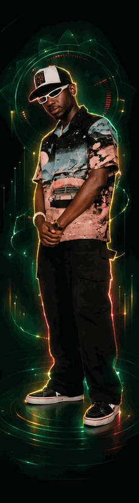

How I judge: ±5¢ is what most tuners call in tune; around 10¢ is where many listeners start to notice. Every comment comes from the pitch and loudness the mic measured, nothing is guessed.
Play freely for a set time. When it ends I study the whole take: accuracy, your habits on each note, key and range, phrasing, vibrato, how you held up from start to finish, and your top 3 things to work on.
Pitch trail
Your pitch over the last 6 seconds. Flat line = steady breath. Waves = vibrato. Steps = note changes. Lines are notes; colored lines are the 7 stations.
Harmonic ladder
1× is your note. 2×, 3×… are overtones that ring above it. More overtones = brighter, breathier tone. Fewer = purer, rounder tone.
Rhythm ↔ brainwave bands
0.5–4
4–8
8–13
13–30
30+
When your note wobbles (vibrato), the app counts the wobbles per second and shows which brainwave range that number falls in. It compares numbers only: the phone hears your sound, not your brain.
Seven stations · body match
Right side: the 7 stations. Left side: real glands and nerve centers, drawn where they actually sit in the body. Tap any point to learn more.
Teacher · listen, then match
Sacred Geometry · sand plate
How it works: a real Chladni plate is a metal plate with sand on it. Each note makes the plate vibrate in its own way. Sand bounces off the parts that shake and settles on the lines that stay still. Low notes make simple shapes; higher notes make detailed ones. Silence = the sand rests where it is. This is a simulation of the plate, not of the body.
Waveform
The microphone signal as a moving line.
Spectrum
50–4,000 Hz. Red = low, gold = middle, green = high.
After you play · how did it feel?
Saves on this phone: time, note, Hz, cents, station, sustain, wobble rhythm, feeling, scale number and your notes. No audio.
Your log
Body map · tap an area
Today's focus: none yet. Open an area and tap “＋ Add to today's focus”.
Chakra chart · everything linked
Stones, herbs, colors, seed sounds and balanced/imbalanced signs come from chakra and herbal traditions (your charts). Organs and glands are real anatomy near each point. Herbs: traditional associations, not treatments. Check with a health professional before taking any herb if pregnant, nursing or on medication.
How the layers connect
🎙 MEASURED live from the mic: Hz, note, tuning, sustain, overtones, wobble rhythm.
🎼 MUSIC note name, solfège, distance from C.
🕉 TRADITION from your chakra charts: name, seed sound, element, affirmation, body area.
🌈 LIGHT the real wavelength of each color.
❤️ FEELING what you report after playing.
Each station shows its original Sanskrit name in Devanagari script, its spelling in Latin letters, how to say it, and what it means. The 7 stations follow the modern sound-healing pairing C = Root … B = Crown (DO RE MI FA SO LA TI), the same pairing as your "Figure 13" spine chart.
Reference cards
🧠 Brainwave bands
Measured with EEG sensors on the head. Delta 0.5–4 Hz: deep sleep. Theta 4–8 Hz: deep relaxation, dreaming, creativity. Alpha 8–13 Hz: calm, relaxed awareness. Beta 13–30 Hz: alert thinking, problem solving. Gamma 30–100 Hz: high focus and perception. Flute notes vibrate hundreds of times per second, so they sit far above these bands; the link this app shows is your rhythm (wobbles per second).
🌙 Yoga nidra states
Vishva: the waking state (beta). Pratyahara: turning awareness inward (alpha). Taijasa: the dreaming state (theta). Prajna: deep dreamless sleep (delta). Yoga nidra teaches being aware while the body rests as if asleep.
🌈 Color and light
Visible light runs about 400–700 nanometers. Red ≈ 635–700, orange ≈ 590–635, yellow ≈ 560–590, green ≈ 520–560, cyan ≈ 490–520, blue ≈ 450–490, violet ≈ 400–450. A sound note and a light color are different kinds of waves; the stations pair them by tradition, not by physics.
❤️ Emotion wheel (Plutchik)
Eight core feelings: joy, trust, fear, surprise, sadness, disgust, anger, anticipation. Each has a softer and stronger version (for example serenity → joy → ecstasy). Blends make new ones: joy + trust = love.
🌀 Emotional Guidance Scale
A 22-step ladder from joy, freedom and love (1) down to fear, grief and powerlessness (22). It's a self-reflection tool from spiritual teaching. Use it to track how you feel over time.
🧍 Roby Chart
Links beliefs and emotions to body areas (based on Louise Hay, Caroline Myss and others). Useful as a reflection prompt, not a medical map.
🎨 Color psychology & birth-month wheel
Colors carry common associations, such as red for energy and blue for calm, which change by culture and context. The birth-month wheel is a symbolic reference.
🖐 Left / right brain learners
Both halves of the brain work together on almost every task. "Left or right brain" is a way to talk about learning styles: you can be both analytical and visual. You learn best with images, so this app teaches with pictures.

Welcome. Together we'll move through seven stations of the body, from the base of the spine to the crown, using sound, breath and stillness. Relax, breathe, and simply notice how you feel.
Sound healing here is a relaxation and reflection practice, not a medical treatment.